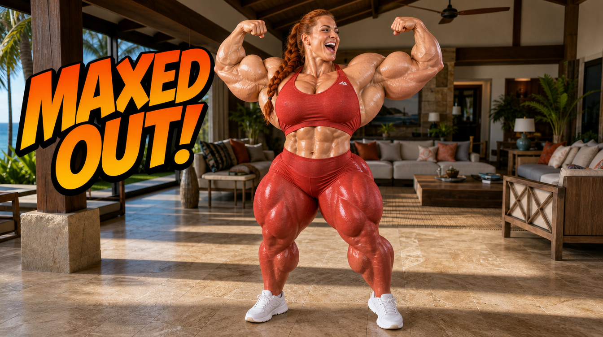
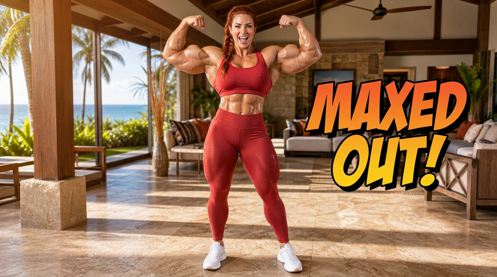
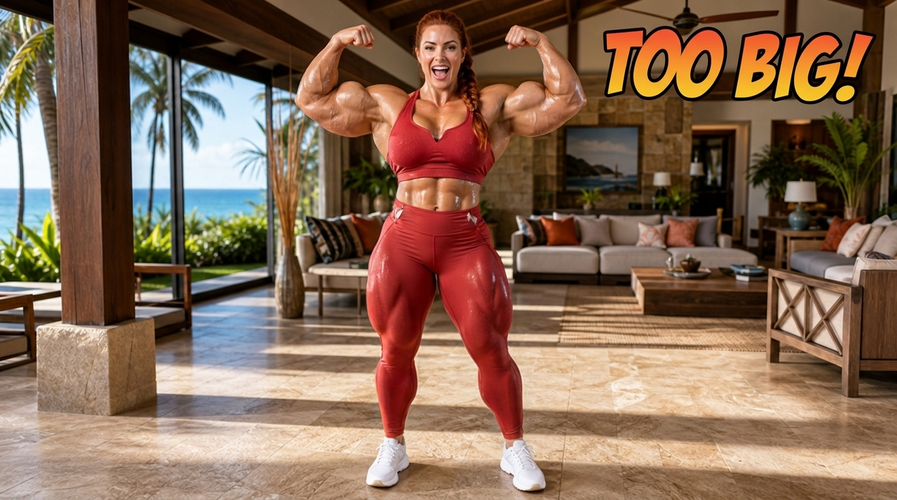
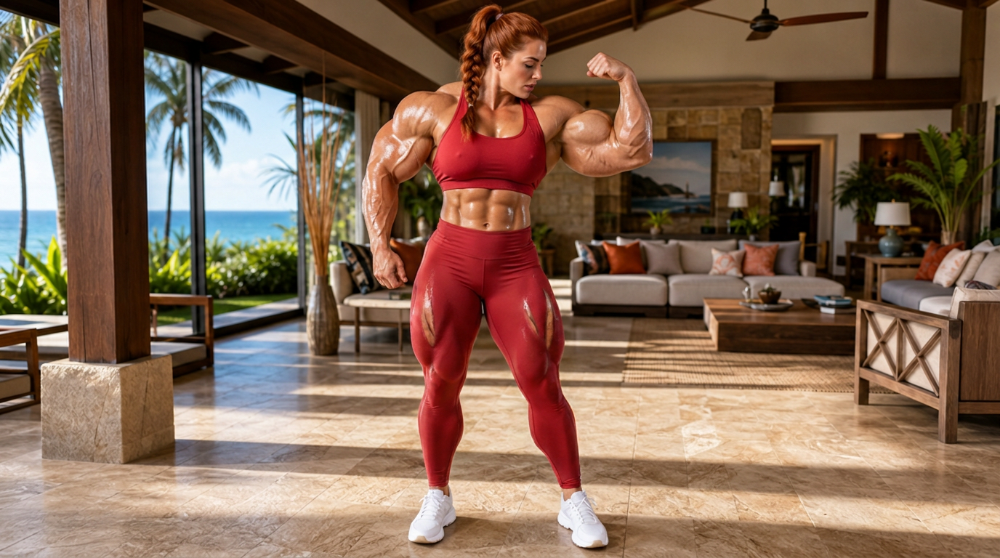
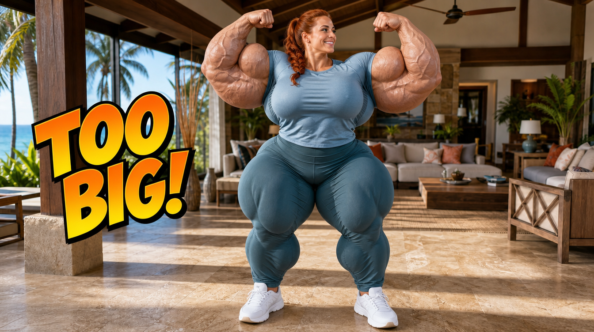
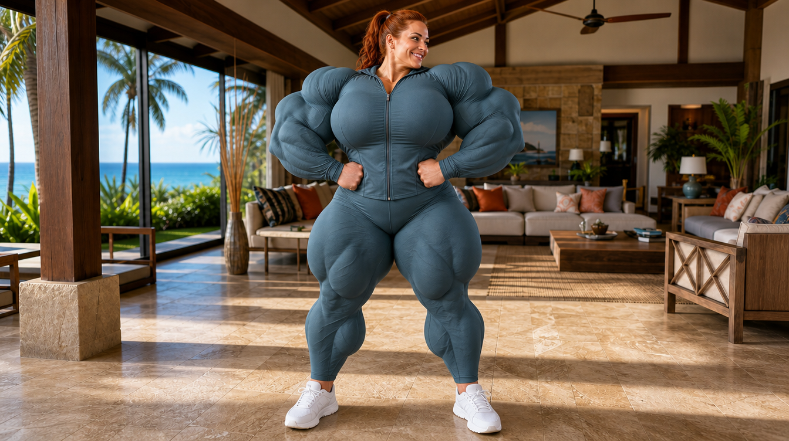
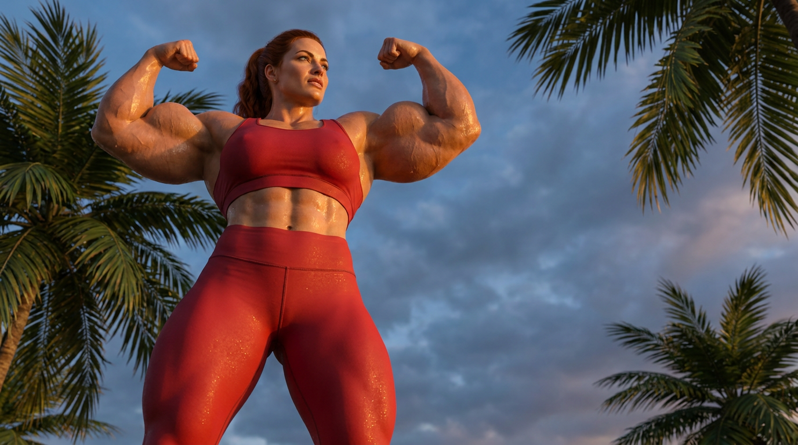

Same auburn growth-lead (face ref) + numbered muscle-size lineup ref, “as big as possible.” Grow-Island style, 1K, 16:9.
Headline finding (honest, and counter-intuitive): The assumption was that Nano Banana 2 goes bigger. In practice it’s split:
GPT Image 2 renders the most exaggerated, cartoonish mass — its size 6 result is visually larger / more comic-book-huge than NB2’s size 9.
But GPT’s safety filter is the real ceiling: the size 9 hypermuscular prompt came back NSFW-rejected on GPT, while NB2 rendered it without complaint.
Nano Banana 2 is more photoreal / anatomically grounded (reads like a real IFBB pro), scales up believably with the lineup, and is more permissive — so it’s the better choice when you need reliable extreme sizes that won’t get blocked.
So: GPT = bigger-looking but hits a content wall at the extreme; NB2 = more realistic, no wall. For “as big as possible” production without rejections, NB2 wins on reliability; for a single cartoonish hero beat, GPT can punch bigger if it passes the filter.
Update — the wall is clearable: re-running GPT’s rejected size 9 with fuller coverage (full T-shirt / zipped track jacket + full-length pants instead of a sports bra) cleared the filter on the first try AND produced the single most massive result of the whole test (see the last row). Confirms the fix: when GPT blocks an extreme-size panel, add coverage and widen the frame rather than retrying the same prompt. Logged as lesson L33.
Size 6 — head to head

GPT Image 2size 6, double-biceps. Enormous, near-cartoonish mass — arms and quads dominate the frame. Crisp “MAXED OUT!” SFX. This is GPT’s safe ceiling (it passed the filter).

Nano Banana 2size 6, double-biceps. Strong but believable — a real-bodybuilder read, notably smaller/more grounded than GPT’s size 6 despite the identical prompt.
Nano Banana 2 — pushed to the hypermuscular 4–9 lineup (size 9)

Nano Banana 2size 9, “TOO BIG!” Bigger than NB2’s size 6, still photoreal. The 4–9 lineup pushes mass up reliably — and the classifier allowed it (GPT rejected the same prompt).

Nano Banana 2size 9, full-body. Massive IFBB-scale physique at full standing distance, villa background sharp — the kind of reveal frame the style ends a growth arc on.
GPT Image 2 — size 9, filter cleared with fuller coverage (the biggest of all)
The earlier GPT size 9 with a sports bra was NSFW-rejected. Swapping to full coverage cleared it instantly — and GPT then rendered the most extreme mass in the entire test.

GPT Image 2size 9, full T-shirt + track pants, “TOO BIG!”. Cleared the filter; colossal comic-book mass that dwarfs everything NB2 produced. Coverage was the only blocker.

GPT Image 2size 9, zipped track jacket, full-body. Also cleared; absurd hypermuscular scale, fully covered and wholesome. This is GPT’s true ceiling once the classifier is satisfied.
Bonus — low-angle hero (NB2, size 6)

Nano Banana 2size 6, low-angle hero. The monumentalizing worm’s-eye angle from the style guide, applied to a maxed physique against dusk sky.
Dimension
GPT Image 2
Nano Banana 2
Raw exaggeration at same prompt
Bigger / cartoonish
More grounded
Photorealism of muscle
Stylized, comic-huge
Photoreal IFBB read
Absolute max size achievable
Biggest (size-9 w/ coverage)
Very big, photoreal
Extreme-size permissiveness
Blocks size-9 in sports bra; clears with full coverage